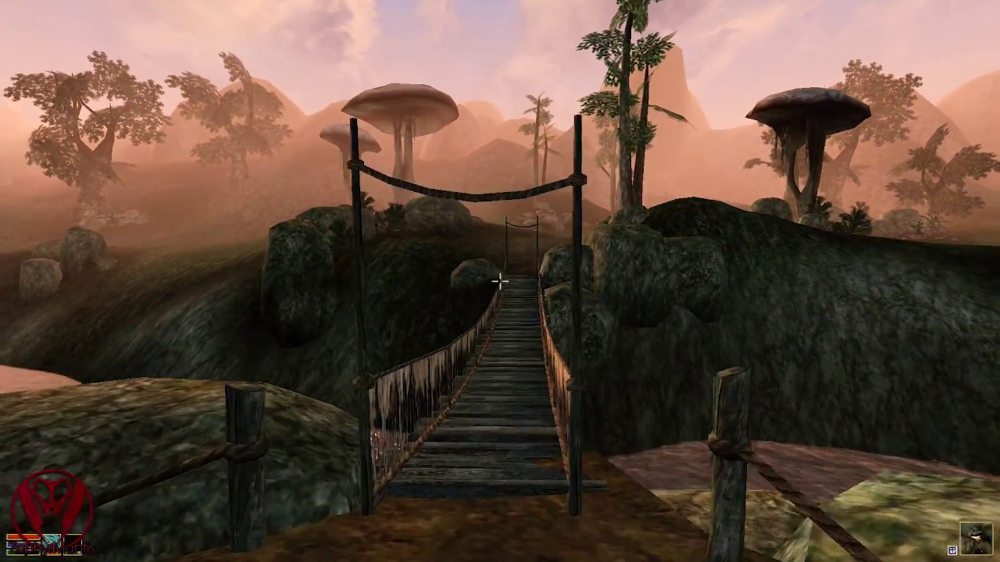

Morrowind
The Elder Scrolls III: Morrowind is an open-world action role-playing video game developed by Bethesda Game Studios and published by Bethesda Softworks. It is the third installment in the Elder Scrolls series, following 1996's The Elder Scrolls II: Daggerfall, and was released in 2002 for Microsoft Windows and Xbox. The main story takes place on Vvardenfell, an island in the Dunmer (Dark Elf) province of Morrowind, part of the continent of Tamriel. The central quests concern the deity Dagoth Ur, housed within the volcanic Red Mountain, who seeks to gain power and break Morrowind free from Imperial reign.
Although primarily a fantasy game, with many gameplay elements and Western medieval and fantasy fiction tropes inspired by Dungeons & Dragons and previous RPGs, it also features some steampunk elements and drew much inspiration from Middle Eastern and East Asian art, architecture, and cultures. Morrowind was designed with an open-ended, freeform style of gameplay in mind, with less of an emphasis on the main plot than its predecessors. This choice received mixed reviews by some members of the gaming press, though such feelings were tempered by reviewers' appreciation of Morrowind's expansive, detailed game world.
Morrowind achieved both critical and commercial success, winning various awards including Game of the Year and selling over four million copies worldwide by 2005. The game spawned two expansion packs: Tribunal and Bloodmoon. Both were repackaged into a full set (along with several minor add-ons) and titled Morrowind: Game of the Year Edition, which was released in October 2003. The open-source, free software alternative game engine OpenMW permits users of Linux and macOS, as well as Windows, to play the game natively, and with support for optional higher-end graphics than the original Bethesda engine. It requires an installation of the original game, as it uses the Bethesda game data files, and supports many third-party mods. A successor, The Elder Scrolls IV: Oblivion, set six years after Morrowind, was released in 2006